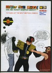
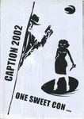
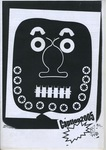
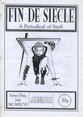
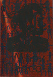
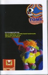
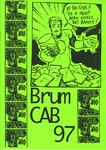

The Zines
From August 2024 I’m focussing on scanning the covers and adding them to the spreadsheet - this should take a couple of months.
Thumbnails link to archive pages for each publication. Metadata is pretty basic - many zines have more than one creator but I’ve just entered the main or first couple of listed people for now, and “type†is very broad. This will all be expanded once the first pass is done. They’re sorted by creator and you can filter by type or country. Full search to come later.
961 zines of the approx 4-5,000 in the archive have been processed with more added every few days.
Filter
» RESET «
Type: Zines | Review Zines | Comics | Anthology Comics | Other
Country: UK | USA | RoW
This is a catch-all category, comprising Art Books (a broad church), Catalogues (distinct from review zines, these are usualy for a mail order service) and Mail Art (a whole different medium that crosses over with zines here and there), with Other mopping up that which doesn’t even fit into those.
 |
Heroes Adrian Brown |
Type: Other Year: 2001 Format: A4 Country: UK 🔗 100605 |
|  | Just One Page 2 Adrian Brown |
Type: Other Year: 2004 Format: A4 Country: UK 🔗 100710 |
 |
Andy Bleck Drawings 2004 Andy Konky Kru |
Type: Art Book Year: 2004 Format: A4 Country: UK 🔗 100639 |
 |
Realistische Zeichnungen 1 Andy Konky Kru |
Type: Art Book Year: Format: A5 Country: UK 🔗 100033 |
 |
Zeichnungen Andy Konky Kru |
Type: Art Book Year: Format: A4 Country: UK 🔗 100716 |
 |
Big Untidy - Flyer and Letter Big Untidy |
Type: Other Year: Format: A5 Country: UK 🔗 100122 |
 |
Caption 1996 Caption |
Type: Other Year: 1996 Format: A4 Country: UK 🔗 100828 |
 |
Caption 1997 Caption |
Type: Other Year: 1997 Format: A4 Country: UK 🔗 100829 |
 |
Caption 1999 Caption |
Type: Other Year: 1999 Format: A4 Country: UK 🔗 100549 |
 |
Caption 2000 Caption |
Type: Other Year: 2000 Format: A4 Country: UK 🔗 100492 |
 |
Caption 2001 Caption |
Type: Other Year: 2001 Format: A4 Country: UK 🔗 100562 |
|  | Caption 2002 Caption |
Type: Other Year: 2002 Format: A4 Country: UK 🔗 100550 |
 |
Caption 2004 Caption |
Type: Other Year: 2004 Format: A4 Country: UK 🔗 100477 |
|  | Caption 2005 Caption |
Type: Other Year: 2005 Format: A4 Country: UK 🔗 100686 |
|  | Fin De Siecle 1 Gavin Palmer |
Type: Art Book Year: 1996 Format: A4 Country: UK 🔗 100776 |
 |
Fin De Siecle 2 Gavin Palmer |
Type: Art Book Year: 1996 Format: A4 Country: UK 🔗 100774 |
 |
Fin De Siecle 3 Gavin Palmer |
Type: Art Book Year: 1997 Format: A4 Country: UK 🔗 100773 |
 |
Fin De Siecle 6 Gavin Palmer |
Type: Art Book Year: 1997 Format: A4 Country: UK 🔗 100775 |
 |
Fiddleback Portfolio Mal Earl |
Type: Other Year: 1998 Format: A4 Country: UK 🔗 100560 |
 |
Disinfotainment Mark Pawson |
Type: Catalogue Year: 1996 Format: Other Country: UK 🔗 100851 |
 |
Disinfotainment - Armchair Shopping Mark Pawson |
Type: Catalogue Year: 1996 Format: A6 Country: UK 🔗 100008 |
|  | Mapk ĞŸaвcoн Mark Pawson |
Type: Art Book Year: Format: A5 Country: UK 🔗 100076 |
 |
White Buffalo Gazette Apr 96 Maximum Traffic |
Type: Mail Art Year: 1996 Format: A5 Country: USA 🔗 100423 |
|  | Due to mistake read this book backwards Paper Rad |
Type: Art Book Year: Format: A5 Country: USA 🔗 100843 |
 |
Muppet Babies Paper Rad |
Type: Art Book Year: Format: A5 Country: USA 🔗 100165 |
|  | BrumCAB 97 Pete Ashton |
Type: Other Year: 1997 Format: A4 Country: UK 🔗 100884 |
 |
BugPowder Distribution Catalogue 7 Pete Ashton |
Type: Catalogue Year: 1998 Format: A4 Country: UK 🔗 100615 |
 |
Crap Hound 5 Sean Tejaratchi |
Type: Art Book Year: 1998 Format: A4 Country: USA 🔗 100742 |
 |
Crap Hound 6 Sean Tejaratchi |
Type: Art Book Year: 1999 Format: A4 Country: USA 🔗 100923 |
 |
Slab International July 1997 Slab-o-Concrete |
Type: Catalogue Year: 1997 Format: A6 Country: UK 🔗 100857 |
 |
Crisp! Steve Roper |
Type: Other Year: 1997 Format: A4 Country: UK 🔗 100927 |
 |
1996: The Calendar Terry Wiley & Dave McKinnon |
Type: Other Year: 1996 Format: A4 Country: UK 🔗 100888 |
 |
V2 stickers V2 |
Type: Other Year: Format: A4 Country: USA 🔗 100801 |
 |
Wow Cool Spring 97 Wow Cool |
Type: Catalogue Year: 1997 Format: A5 Country: USA 🔗 100207 |
ends.